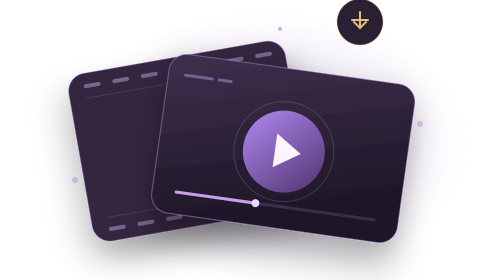

Detected sources
0In this page session
Files stay local
YOUR PERSONAL MEDIA WORKSPACE
Capture. Collect. Create.
Discover your media, choose its quality, and make it yours to work with.
↘
Video, simplified.No subscriptions. Just your workflow.
KENUXA WATCH / COMMUNITY
Your next great
watch starts here.
A shared home for videos worth finding.
Watch original
players. Share by choice.
ORIGINAL PLAYERSSHARE BY CHOICE

DISCOVER / WATCH / SHAREDiscover on Watch 0
Loading shared discoveries…
⌕
Everyone shows public source links shared across installations. Saved privately stays in this browser. Opening a player contacts the original provider; embedding depends on its settings. Sharing identity belongs to this installation—clearing extension data removes your ability to manage earlier shares.
Your videos 0
Legacy personal copies stay on this device. New downloads save to disk; public viewing uses source embeds.
⌕
In your queue
0Ready when you areDownloads completed
0Saved in this workspace
◎
CONNECTED SOURCE PAGEOpen Kenuxa from a video page to connect a source.
Media library 0
Videos and audio detected while you browse.
⌕
Your download queue
Jobs run one at a time. Media parts use up to three parallel connections.
Download history
Only file details are retained. Private media URLs stay in session memory.
Make your media ready.
Convert a file from your device without uploading it.
Start with the source page
- Open a webpage and play its video.
- Click the Kenuxa extension, then Open Video Studio.
- Choose a quality and output format, then add the media to your queue.
- Keep the source page and Studio open until saving finishes.
When you see more than one source
Pages can contain advertisements and several versions of the same video. Use the host, path, stream type and preview on the source page to identify what you want.
Pause & retry
Pause takes effect between video parts. Parts already in flight can finish. Resume keeps downloaded parts in this open tab. Reloading Studio or closing it loses unfinished work. Retry starts a failed job again.
Coverage, clearly stated
- Direct video and audio files, including byte-range downloads.
- Complete, unencrypted HLS, quality selection, byte ranges and separate audio tracks.
- Static, unprotected DASH with one period and common SegmentTemplate, SegmentTimeline or SegmentList layouts.
- Built-in MP4 remux, H.264/AAC conversion and MP3 export.
There is no universal website extractor. DRM, encrypted manifests, live streams, signature deciphering and paywall bypass are unsupported. Sites using custom players may not expose a usable media source.
Jobs are limited to 256 MB of input data; each page transfer is limited to 32 MB. Conversion needs additional memory. MP4 fast mode depends on compatible codecs.
Open-source engine & licenses ↗